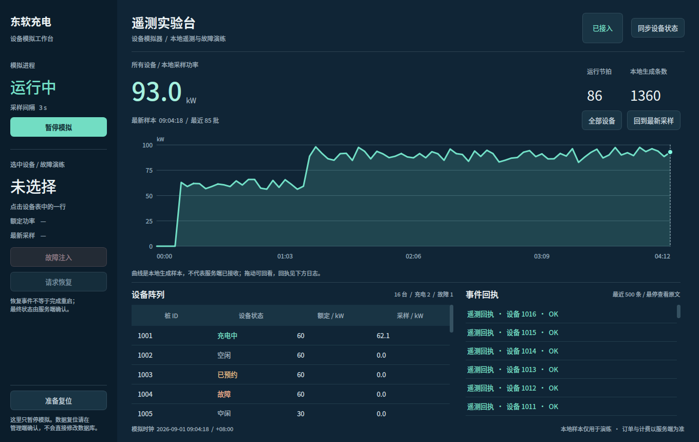
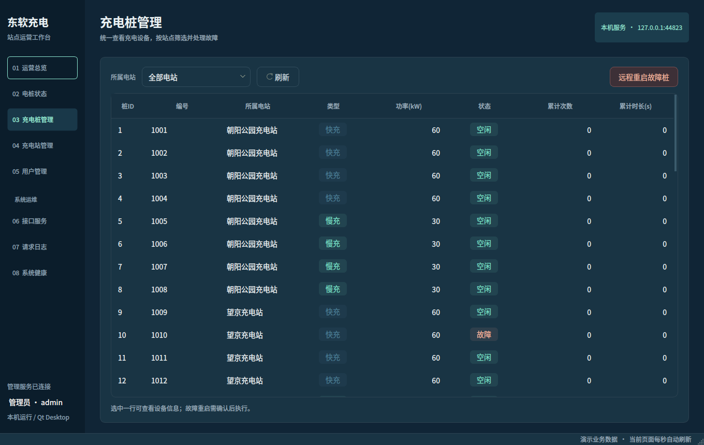

能量脉冲 · 三端主题延展
这里展示真实 Qt 控件的测试截图，不是用网页重绘的应用。模拟器测试样本由固定种子的现有采样引擎生成；网络回执在截图测试中使用替身，真实三程序联调另行回归。
已通过的双端原稿对照 · 其他管理页面 · 主题对照
模拟器 · 遥测实验台

控制台复用已通过主题的深蓝底、青绿强调、大数字和原生曲线。左栏操作固定；额定功率与最新本地采样明确分列；曲线与生成条数不冒充服务端入库或订单计费。样本最多保留 600 批，日志最多 500 条。
服务端 · 其他管理页面
同日后续：电桩状态与系统健康已进一步完成结构级改造，查看最新设备阵列与故障处置。下方保留改造前的截图用于对照。
这些页面沿用既有的业务布局，统一了主题、表格、表单、状态和弹窗外观；并非本轮逐页重新构图的设计稿。运营总览是结构级重做，营收统计仍保留。

主题对照 · 已通过的管理端与新增模拟器
两者均为 1360×860、1× 原生截图，下方全景同比缩小（最大 45%，随预览窗口宽度适配）。这用于检查同一产品的主题与排版语言，不把不同业务页面当作逐像素复刻。
已通过的管理端 · 主题依据 新增模拟器 · 派生布局
新增模拟器 · 派生布局
数字、单位与文本层次 · 1:1 局部